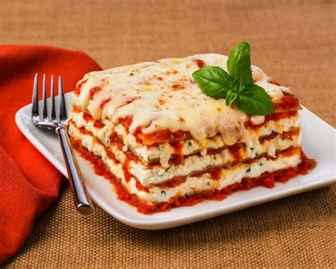

Layers of Love Lasagna

Assemble a homemade lasagna for those you love.
Ingredients
- 5 cloves garlic
- 1/4 cup olive oil
- 2 (28 oz) cans crushed tomatoes
- 2 tsp salt
- 2 tsp dried oregano
- 2 tsp dried parsley
- 2 eggs
- 1 (32 oz) container whole milk ricotta
- 1/2 cup grated Parmesan
- 1/2 tsp black pepper
- 2 cups + 2 cups shredded mozzarella
- small bunch basil
- 1 (9 oz) box oven-ready lasagna noodles
Steps
- Preheat oven to 375 degrees F.
- Smash, peel, and mince garlic cloves. Heat oil in pot over medium heat. Add garlic and cook 1 minute.
- Add tomatoes, salt, oregano, and parsley. Bring to boil, then reduce heat to low.
- Meanwhile, crack eggs into large bowl and whicsk. Stir in ricotta, Parmesan, pepper, and 2 cups mozzarella.
- Mince basil to make 1/4 cup. Add to cheese mixture. Stir well.
- Carefully, move sauce pot to workstation. Drizzle 1 cup sauce into baking dish.
- Set 3 noodles on cutting board. Spread 1/3 cup of cheese misture on each noodle.
- Evenly space the three cheese-covered noodles into baking pan.
- Repeat steps 6-8 three more times, continuing the sauce, noodle, cheese pattern.
- Finish with 1 cup sauce, followed by 3 lasagna noodles. Cover fully with remaining sauce.
- Cover lasagna with foil and bake for 30 minutes. Remove lasagna from oven and remove foil.
- Sprinkle with 2 cups mozzarella. Return to oven, uncovered. Bake until melted and bubbly, 15 min. TASTE & SHARE!